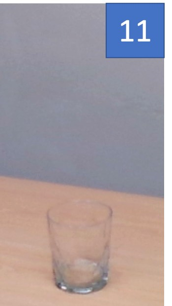

CORSMAL Containers
The CORSMAL Containers dataset comprises 1,656 images of 23 containers for liquids. The containers have different shapes, materials and degrees of transparency.
|  | ||||||||||||
The objects 1 to 13 are transparent; 14 to 18 translucent; and 19 to 23 opaque. Crops are taken from images acquired with the same camera view, lighting and background. Note that object 6 (diamond glass), object 16 (amaretto bottle) and object 20 (deformed water-bottle) do not have circular symmetry.
The dataset was acquired with two Intel RealSense D435i cameras, located approximately 40cm from the object placed on the top of a table. The cameras are calibrated and localised with respect to a calibration board. The resulting images (1280x720 pixels) are RGB, depth and stereo infrared, with the RGB and depth images being spatially aligned.
Data acquisition was performed in two separate rooms with different lighting conditions and different backgrounds are obtained using two tablecloths in addition to a no-tabletop scenario. We employed a room with natural light. The dimensions of the table-top are 160x80 cm and the height of the table is 82 cm from the ground, and a room with no windows and the illumination is provided by either ceiling lights or additional portable lights and where the table is of size 60x60 cm and height 82 cm from the ground. We collected in total 207 configurations, as the combination of objects (23), backgrounds (3) and lighting conditions (3), resulting in 414 RGB images, 414 depth images and 828 IR images. We manually annotated the maximum width and height of each object with a digital caliper (0-150mm ± 0.01mm) and a measuring tape (0-10m ± 1mm).
Sample images of the dataset for each object from both views under different illuminations and backgrounds. From left to right: RGB, depth, and narrow-baseline stereo infrared images.
Container detection via semantic segmentation using Mask R-CNN on sampled RGB images of the dataset. Mask R-CNN is re-trained on the MS COCO dataset considering the classes cup, wine glass, bottle and vase. Even if Mask R-CNN can accurately detected most of the containers, some of the transparent objects are not found in either or any of the two views, or the mask is inaccurate (e.g. truncated or not fitting the real object boundaries). In addition to the transparency, the lighting condition and the type of background through the transparent objects affect the final segmentation.
Download links
List of the objects with their physical properties
Dataset and annotations (807 MB)
Annotations only
Open Access (ArXiv)
LoDE method and visual results
For any enquiries, questions, concerns and general feedback, please contact a.xompero@qmul.ac.uk.
CORSMAL Containers (1.0) [Data set]
A. Xompero, R. Sanchez-Matilla, R. Mazzon, and A. Cavallaro
Queen Mary University of London. https://doi.org/10.17636/corsmal2
Multi-view Shape Estimation of Transparent Containers
A. Xompero, R. Sanchez-Matilla, A. Modas, P. Frossard, and A. Cavallaro
IEEE International Conference on Acoustics, Speech and Signal Processing (ICASSP), Barcelona, Spain, 4-8 May 2020
Sponsors


Partners